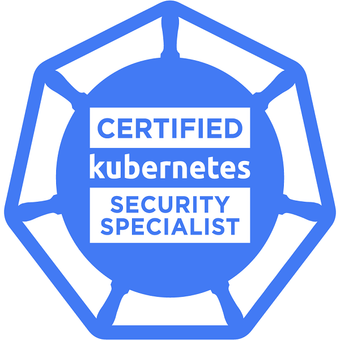
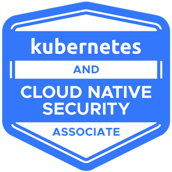
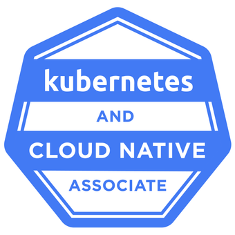

Hieu
Nguyen
System / DevOps Engineer
2+ years building Linux, Kubernetes, and Azure/AWS infrastructure. I streamline CI/CD, cut downtime, and keep production boring — in a good way.
DevOps Engineer &
Kubestronaut
With 2 years as a System/DevOps Engineer, I specialize in Linux administration, Kubernetes, and Azure / AWS. I focus on streamlining CI/CD, reducing downtime, and cutting operational cost through infrastructure that is observable and repeatable.
At Upskills Vietnam I delivered Klaara product solutions for CIMB Bank — Jenkins/Helm pipelines that dropped deploy time from 1 hour to 15 minutes, a monorepo migration that cut builds from 30 minutes to 15 seconds, and image sizes from ~1.2GB to ~250MB.
Security is part of the pipeline, not a ticket at the end. SonarQube, Trivy, and Snyk integration mitigated vulnerabilities by over 70%. HPA plus MySQL group replication held 99.95% uptime.
core competencies
Verified Credly badges — click any badge to open the public credential.






Delivered Klaara product solutions for CIMB Bank. Maintained core systems with monitoring, alerts, and recovery to minimize downtime. Built Jenkins/Helm pipelines that cut deployment time from 1 hour to 15 minutes (2 releases/week). Migrated CI/CD to a monorepo (Git submodules), reducing build time from 30 minutes to 15 seconds. Shrunk Docker images from ~1.2GB to ~250MB. Integrated SonarQube, Trivy, and Snyk and mitigated vulnerabilities by over 70%. Designed Helm charts, HPA autoscaling, and MySQL group replication for 99.95% uptime — plus RBAC, secure ingress, and password rotation.
Assisted with GCP infrastructure (VPC, IAM, Compute Engine, GKE) for scalable application deployments. Supported Terraform modules with reusable, version-controlled provisioning. Deployed AI microservices on GKE with Cloud Storage datasets, and practiced GitOps with ArgoCD plus GitLab CI.
Configured and troubleshot Linux systems across the software development lifecycle. Containerized automotive applications with Docker for consistent build and test environments. Tracked toolchain resource usage with Linux utilities and AWS CloudWatch. Contributed to CI/CT pipelines using Jenkins, Git, and Docker.
Orchestration
CI/CD & GitOps
Infrastructure as Code
Cloud Platforms
Observability & Security
Systems
Production delivery for a financial product: Jenkins + Helm, monorepo migration, image slimming, and DevSecOps gates. Deployment time 1h → 15m; builds 30m → 15s.
Side project (May–Aug 2025). Isolated Dev/UAT accounts, modular Terraform, GitHub Actions to ECS Fargate with blue/green releases, multi-AZ RDS, and centralized CloudWatch / CloudTrail.
At CloudAce: Terraform-provisioned GCP, GKE workloads with Cloud Storage datasets, and ArgoCD GitOps so cluster state followed git — not click-ops.
Bosch internship: Dockerized automotive tooling, Jenkins CI/CT, and CloudWatch plus Linux profiling (htop, iostat, perf) for consistent, measurable builds.
Let's build something
production-grade together.
Open to DevOps / platform / SRE roles and infrastructure work. If your pipeline is slow, your cluster is noisy, or your images are still 1GB — let's talk.